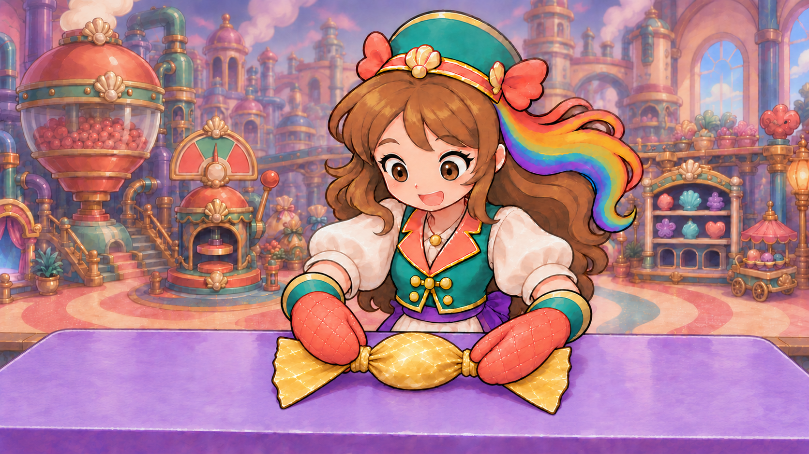
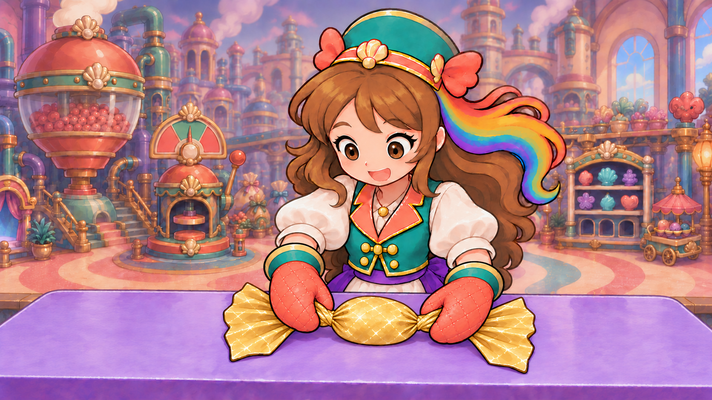
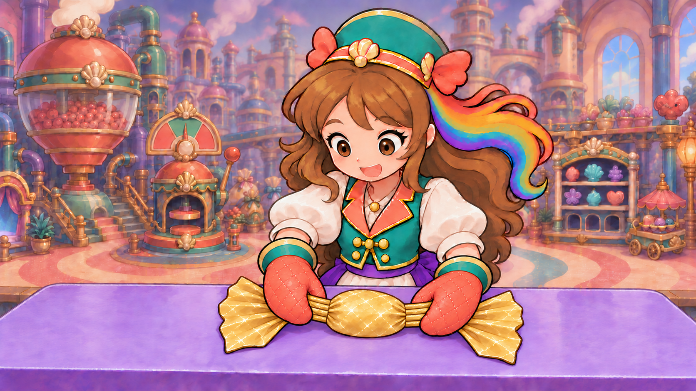

Specific gold wrapper · do the hands fit?
A4 static grip4.5/5 provisional · current in-game WRAP2.8/5. Both original sleeve-attached mittens now pinch the short untwisted necks of the same supported gold-covered sweet. Motion and current game/training placement still require review. Inherited room hierarchy remains4.4.
Latest complete grip native and11 evaluations · Preceding complete-cover/press source · All six rejected earlier local motion studies · All-items library · Reuse inventory and scope · Current acceptance boundaries
Every full native is preserved. A1 had premature tied rings and fan-top contact; A2 reached both grip floors but implied an early twist; A3 made the necks rigid; A4 restores flexible continuous paper. These are source poses, not sequential accepted animation frames.
Attempt 1 · 3.2/5 · REJECTED_PRETIED_NECK_RINGS_AND_FAN_TOP_CONTACT

| Individual item | Draft score | Evaluation |
|---|
| exactly two owned mittens | 4.5/5 | Exactly two quilted coral mittens remain attached to the two teal cuffs and cream sleeves. |
| left neck contact | 3.2/5 | Left mitten rests broadly over the loose fan; its thumb does not visibly oppose its palm across the short neck. |
| right neck contact | 3.4/5 | Right thumb approaches the neck but the broad palm obscures the fan rather than displaying a two-sided neck pinch. |
| pre twist semantics | 2.7/5 | Both necks are already surrounded by closed gold rings/rolled collars. These supply an unearned completed seal before any twist. |
| single continuous gold wrapper | 4.4/5 | The body and fans form a legible single wrapper, but the added circumferential rings read as separate tied components. |
| opaque supported small oval | 4.5/5 | One low oval remains covered and rests at the same table centre with no red exposed; size is close to the reference. |
| outward fan ownership | 4.1/5 | Two gold fans extend outward, but both mitten palms hide their near folds and weaken grasp readability. |
| character table registration | 4.5/5 | Character, cuffs, factory and purple table remain recognizably stable in the full frame. |
| painted gold material | 4.5/5 | Gold retains broad highlights, crinkled bands and dark contours matching the contextual sheet. |
| inherited room graphics | 4.4/5 | Retained detailed machine backdrop remains a separate weak source priority; no new mounted-room opinion. |
| whole pre twist pose | 3.2/5 | Rejected: the grip and unsealed stage are not demonstrated even though character/material continuity is useful. |
Native, prompt and reference provenance · Individual review
Attempt 2 · 4.2/5 · CONTACTS_AT_FLOOR_PRETWIST_STAGE_REJECTED_DIAGONAL_FOLDS

| Individual item | Draft score | Evaluation |
|---|
| exactly two owned mittens | 4.6/5 | Two coral quilted mittens remain continuously attached to their original teal cuffs and cream sleeves; both thumb lobes are distinct. |
| left neck contact | 4.5/5 | The short left gold neck is clearly compressed between thumb above and palm below, immediately beside the oval body. The outer fan extends beyond the grip. |
| right neck contact | 4.5/5 | The original right mitten thumb and palm visibly oppose across the short right gold neck; the fan extends outward and the sweet stays supported. |
| pre twist semantics | 4.2/5 | Closed rings are gone, but diagonal overlapping folds, especially at the right neck, already suggest a rolled twist. A honest pre-twist gather still needs straighter open longitudinal pleats. |
| single continuous gold wrapper | 4.5/5 | One opaque gold body with two connected short necks and two free fans remains legible. No extra mat or tied component. |
| opaque supported small oval | 4.5/5 | One low covered oval remains at the same lavender table centre; no exposed red or extra sweet. |
| outward fan ownership | 4.5/5 | Both loose fans remain visible outside the mitten pinches, with natural connected folds and dark contours. |
| character table registration | 4.5/5 | Original full scene and character identity remain coherent. Wrists have changed purposefully within the same sleeve attachments. |
| painted gold material | 4.5/5 | Gold crinkles, broad painted highlights and plum outlines match the wrapper reference; no vector or realistic replacement. |
| inherited room graphics | 4.4/5 | Inherited detailed backdrop remains a separate weak source priority. No current runtime-room opinion. |
| whole pre twist pose | 4.2/5 | Both contacts now meet the static drafting floor, but premature twist cues leave this intermediate pose below it. |
Native, prompt and reference provenance · Individual review
Attempt 3 · 4.3/5 · REJECTED_RIGID_ROD_LIKE_NECK_MATERIAL

| Individual item | Draft score | Evaluation |
|---|
| exactly two owned mittens | 4.6/5 | Both coral mitten hands retain their original cuff/sleeve connections and distinct thumb lobes. |
| left neck contact | 4.5/5 | The original left thumb and palm visibly pinch the short neck beside the belly; the fan extends beyond it. |
| right neck contact | 4.5/5 | The original right thumb and palm oppose across the right neck while the same covered sweet remains supported. |
| pre twist semantics | 4.5/5 | The neck folds now run lengthwise without diagonal winding, finished collars or tied rings. The ends remain open. |
| single continuous gold wrapper | 4.3/5 | The four rigid outlined ridges look like separate rods inserted between the belly and fan, weakening flexible single-sheet continuity. |
| opaque supported small oval | 4.5/5 | One fully covered low oval remains on the same table at stable size; no exposed red or extra sweet. |
| outward fan ownership | 4.5/5 | Both gold fan ends remain outside the grips and belong to the central task. |
| character table registration | 4.5/5 | Whole character, scene and supported task remain coherent; no unrelated redesign. |
| painted gold material | 4.3/5 | Belly and fans retain painted gold but the necks read as hard corrugated tubes rather than gathered thin paper. |
| inherited room graphics | 4.4/5 | The unchanged detailed room remains a separate weak source priority. |
| whole pre twist pose | 4.3/5 | Grip and before-twist action are legible, but the neck material still misses this specific flexible wrapper. |
Native, prompt and reference provenance · Individual review
Attempt 4 · 4.5/5 · PRETWIST_GRIP_STILL_4_5_PROVISIONAL_NO_MOTION_OR_RUNTIME_ACCEPTANCE

| Individual item | Draft score | Evaluation |
|---|
| exactly two owned mittens | 4.6/5 | Exactly two original coral quilted mittens retain continuous teal-cuff and cream-sleeve attachments; no extra arm or bare fingers. |
| left neck contact | 4.5/5 | The existing left thumb opposes its palm across the short gathered neck immediately beside the oval. The loose fan extends outward beyond the grip. |
| right neck contact | 4.5/5 | The existing right thumb and palm visibly compress the right neck; the hand is no longer merely resting on a fan or finished collar. |
| pre twist semantics | 4.5/5 | Open lengthwise folds continue through both pinches without diagonal winding, strings, closed rings or finished twists. This depicts gathering before closure. |
| single continuous gold wrapper | 4.5/5 | Neck ridges now bend smoothly into the same belly and fans instead of reading as inserted rigid rods. One gold sheet and one covered oval are legible. |
| opaque supported small oval | 4.5/5 | The sweet remains completely covered, low and supported near the original table centre; no extra object, exposed red or leftover mat. |
| outward fan ownership | 4.5/5 | Both loose fan ends stay attached outside the short neck grips, retaining enough open paper for the later twists. |
| character table registration | 4.5/5 | The same full scene, costume, sleeve ownership and worktop remain stable enough for this source key. Actual temporal conservation and game placement are not established. |
| painted gold material | 4.5/5 | Flexible shallow gold folds share the belly/fan satin bands, restrained crinkles and plum contours. Remaining dense highlights are an inclusive refinement priority. |
| inherited room graphics | 4.4/5 | The retained detailed factory hierarchy remains independently weak. It is preserved to avoid an unrelated scene redesign, not approved as a current runtime room. |
| whole pre twist pose | 4.5/5 | Provisional static drafting floor: both owned neck pinches, same opaque supported sweet, flexible continuous gold paper and honest untwisted ends. No motion, whole wrapping or current game/training acceptance. |
Native, prompt and reference provenance · Individual review
Opposing neck twists and supported release · local motion reference
A bounded study is prepared through the existing quiet-idle/FIFO Comfy workflow. Rendered component1.8/5 rejected;all41 canvases and10 opinions directly reviewed. Gold fans detach and merge into cuffs;opposing twists and stable release fail. Source, normalized input, prompt and seven unchanged workflow bindings are recorded. It does not supply the earlier covering fold or accept current game action.
Rejected movie,all41 images and individual reviews · Exact local study manifest · Component review criteria
Full wrapping still requires a coherent fold → cover → gather → opposing twists → release, followed by actual job/training, device, child and owner review. Scores at4.5 remain in the inclusive refinement queue.